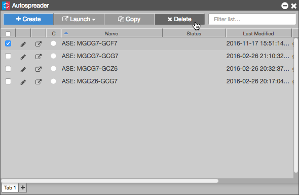

  <p>To delete one or more Autospreader spread(s):</p> 
            <ol>
              <li>Click the checkbox next to the spread(s) you wish to delete</li>
              <li>Click the <b>Delete</b> button
                  <p></p>
              </li>
              <li>Select OK on the verifcation dialog box</li>